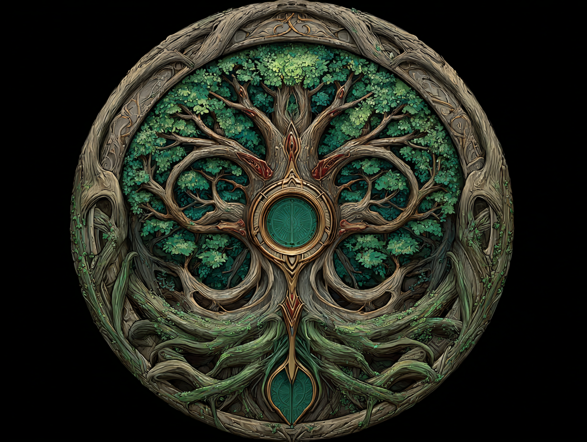
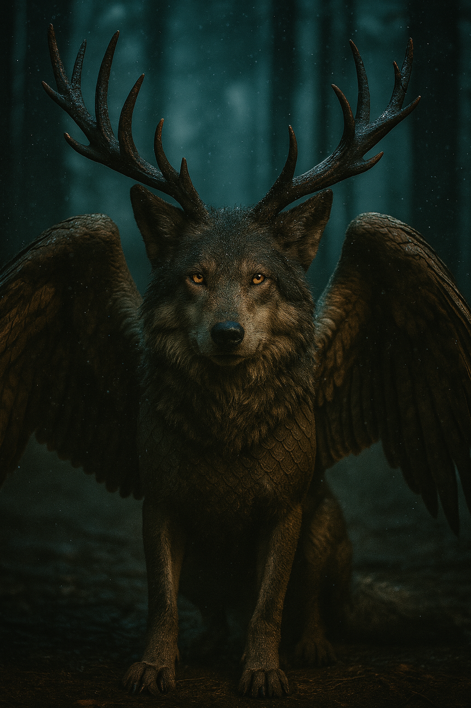
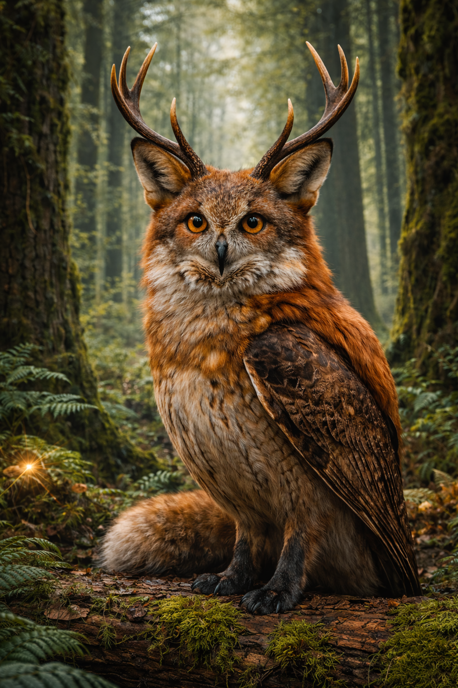
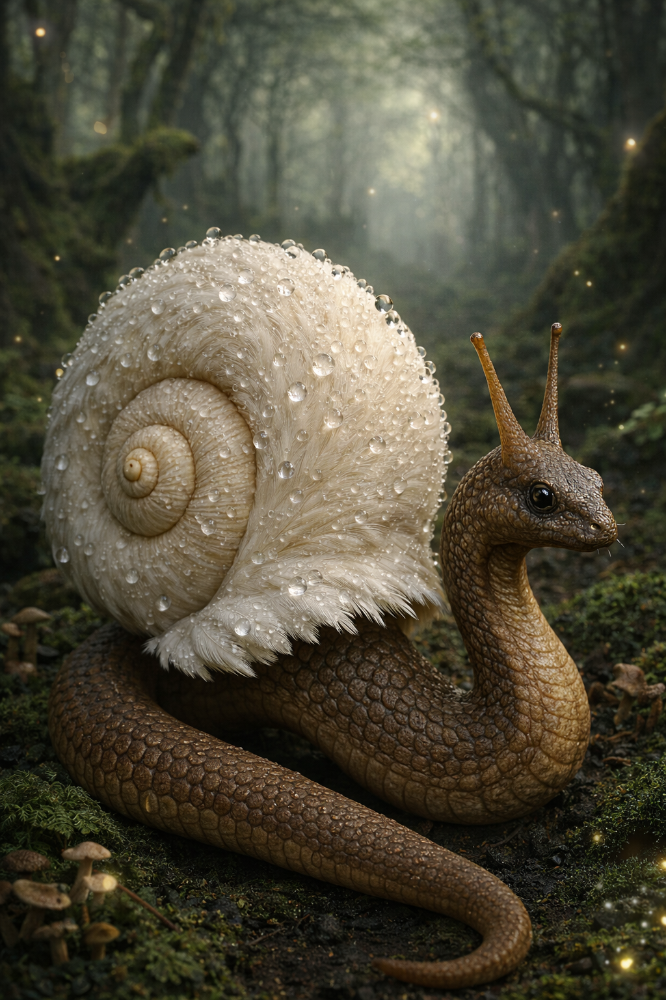

„Les, který ukazuje cesty těm, kteří umí naslouchat" "The forest that reveals its paths to those who know how to listen"
Koupit PDF → Buy PDF →Sylvanor je kouzelný les, který nikdy není stejný. Živý labyrint - spletitý, proměnlivý a plný cest, které se neustále mění. Každý den se trochu přeskupí: stezky se posunou, stromy si potichu vymění místa a zvuky zní jinak než včera.
Sylvanor is a magical forest that is never the same. A living labyrinth - intricate, ever-changing, and full of paths that constantly shift. Every day it rearranges itself: trails move, trees quietly swap places, and sounds ring differently than yesterday.
Cestu v Sylvanoru nenajdeš očima ani na mapě. Najdeš ji jen tehdy, když se zastavíš a začneš poslouchat. Stromy mluví k poutníkovi zvuky - hlubokým hučením kmenů, šuměním listí, cvrlikáním ptáků i jemným chvěním pod nohama.
You cannot find your way through Sylvanor with your eyes or a map. You find it only when you stop and begin to listen. The trees speak to travellers through sounds — the deep hum of trunks, the rustle of leaves, the chirping of birds, and a gentle vibration beneath your feet.
Sylvanor učí moudrosti. Ne takové, kterou si zapíšeš do sešitu, ale takové, která roste uvnitř tebe. Učí trpělivosti, klidu a tomu, že někdy je lepší chvíli mlčet a poslouchat, než hned mluvit.
Sylvanor teaches wisdom. Not the kind you write in a notebook, but the kind that grows inside you. It teaches patience, calm, and the understanding that sometimes it is better to be quiet and listen than to speak right away.
Pro děti od 6 let - ale osloví i dospělé, kteří chtějí znovu naslouchat.
Written for children ages 6 and up, but its message speaks to adults who want to learn to listen again.

Sylvanor je jen jednou částí světa jménem Beastorie. Kromě něj leží ještě šest dalších říší a každá má svůj hlas, barvu a povahu. Sylvanor is just one part of a world called Beastorie. Beyond it lie six other realms, each with its own voice, colour, and character.
Les naslouchání — živý labyrint, který ukazuje cestu těm, kdo umí poslouchat.
The Forest of Listening — a living labyrinth that reveals its paths to those who listen.
Země hlubokých vod — skrývá tajemství, otázky a odpovědi.
Land of Deep Waters — hiding secrets, questions, and answers.
Ohnivé pláně — země ohně, tepla a síly přetvářet.
The Fiery Plains — a land of fire, warmth, and the power to transform.
Říše stínů a snů — učí přijímat strach a konec věcí.
Realm of Shadows and Dreams — teaches acceptance of fear and endings.
Zlaté písky — připomíná, že opravdová hodnota není vidět očima.
Golden Sands — a reminder that true value cannot be seen with the eyes.
Země větru a nebe — učí svobodě, snění a touze létat výš.
Land of Wind and Sky — teaches freedom, dreams, and the desire to fly higher.
Hory síly a nezlomnosti — odraz touhy po síle, která vydrží.
Mountains of Strength — a reflection of the desire for enduring strength.

Strážce prahuGuardian of the Threshold
Tisící předkové: vlk, jelen, orel, dračí ozvěnaAncient ancestors: wolf, stag, eagle, dragon echo
Když se Tarnen objeví, les ztichne a zem pod nohama ztěžkne. Kdo chce projít dál, musí se nejdřív podívat dovnitř sebe.
When Tarnen appears, the forest falls silent and the ground grows heavy. To pass, one must first look within.

Průvodce mezi krokyGuide Between Steps
Tisící předkové: sova, liška, jelenAncient ancestors: owl, fox, deer
Stínolišek neukazuje cestu na mapě, ale v hlavě a v srdci. Kdo ho potká, může v jeho očích uvidět své vlastní kroky.
Stínolišek does not show the way on a map, but in the mind and heart. Those who meet him can see their own steps reflected in his eyes.

TkavecWeaver
Tisící předkové: šnek, had, labuťAncient ancestors: snail, snake, swan
Lurein připomíná, že někdy je v pořádku jít pomalu a pustit to, co už nepotřebujeme. Kde projde, tráva se narovná a les se tiše nadechne.
Lurein reminds us that sometimes it is okay to go slowly and let go of what we no longer need. Where he passes, the grass straightens and the forest quietly breathes in.
Sylvanor není les, kde by se člověk učil z knih. Učíš se jinak. Tím, že zpomalíš, zaposloucháš se a začneš si všímat toho, co se děje kolem tebe. Kdo spěchá, snadno se ztratí, ale kdo naslouchá, začne lesu rozumět.
Sylvanor is not a forest where you learn from books. You learn differently. By slowing down, listening closely, and noticing what is happening around you. Those who rush easily get lost, but those who listen begin to understand the forest.
V noci není Sylvanor nikdy úplně tmavý. Houby, květy a liány se rozzáří měkkým světlem, jako by les držel v dlani hvězdy. A když se dotkneš kůry stromu, ucítíš jemné chvění, jako když se les potichu směje.
At night, Sylvanor is never truly dark. Mushrooms, flowers, and vines glow with soft light, as if the forest holds stars in its palms. And when you touch the bark of a tree, you feel a gentle trembling, as though the forest is quietly laughing.
„Dcera (8) si zamilovala Stínolíska — říká, že jí pomáhá přemýšlet, než něco udělá. A legenda o Melodii Sevelníčka je u nás nejoblíbenější část na dobrou noc." "My daughter (8) fell in love with Stínolišek — she says he helps her think before she acts. And the Legend of Sevelníček's Melody is our favourite bedtime story."
„Syn chce vědět všechno o světě Beastorie — kreslí mapy říší, vymýšlí vlastní Tkavce a ptá se, jestli bude pokračování. Sedm říší mu nestačí." "My son wants to know everything about Beastorie — he draws maps of the realms, invents his own Weavers, and keeps asking if there will be a sequel. Seven realms aren't enough for him."
„Koupila jsem to pro neteř, ale přečetla jsem to celé sama. Tarnen, který čeká, až se podíváš dovnitř sebe — to není jen pro děti. Ta kniha učí zpomalit i dospělé." "I bought it for my niece, but read it cover to cover myself. Tarnen, who waits until you look within — that's not just for children. This book teaches adults to slow down too."
Stáhni si Sylvanor v PDF a vstup do kouzelného lesa, který tě naučí naslouchat. Download Sylvanor as a PDF and step into the magical forest that teaches you to listen.
Po zakoupení obdržíš PDF ke stažení ihned. After purchase you will receive the PDF for instant download.